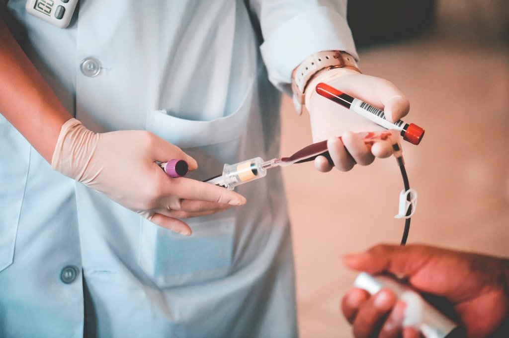

Doe Sangue, Salve Vidas!
Você sabia que sua doação pode salvar até quatro pessoas? O processo é rápido, seguro e você ainda ajuda a quem mais precisa. Reserve um tempo e faça parte dessa corrente do bem. Doe sangue e faça a diferença!
Seu Gesto Vale Ouro
Doar sangue é um ato simples, mas de um valor imensurável. Não custa nada, não dói, e em poucos minutos você pode transformar a vida de alguém. Venha doar e espalhe esperança. Um pequeno gesto para você, uma grande mudança para muitos!

Juntos Podemos Salvar Vidas!
Se você está saudável, sua doação pode ser a ajuda que alguém está esperando. Tire um tempinho do seu dia para fazer o bem! Procure o hemocentro mais próximo e faça parte de uma causa que salva vidas. Doe sangue e seja um herói para quem precisa!
Importância da sua doação
A necessidade de sangue é contínua, ainda mais porque tem prazo de validade. Com isso doações regulares são essenciais para manter os estoques dos hemocentros e hospitais a fim de evitar a falta de qualquer tipo sanguíneo. Faz a prevenção de crises como em grandes acidentes ou surtos de doenças (leucemia ou cirurgias complexas). Doar sangue é um gesto solidário que fortalece a saúde coletiva e pode fazer a diferença entre a vida e a morte.
MOTIVOS
Não há um substituto para o sangue e sua disponibilidade é essencial. Apenas 1,7% dos brasileiros doam sangue regularmente. Uma única doação pode beneficiar até quatro pessoas, pois o sangue doado é separado em diferentes componentes, como hemácias, plaquetas e plasma, atendendo a diferentes necessidades médicas.
Você sabe como funciona?
Primeiro é feito cadastro e triagem, depois coleta de sangue, processamento e testes, armazenamento e distribuição.
Como fazer
Verifique se na unidade de coleta de sua escolha necessita agendamento, nesse caso basta agendar seu atendimento em um banco de sangue ou hospital e estar em boas condições de saúde
Dicas
Hidrate-se: Beba muita água antes e depois da doação. Alimente-se: Coma uma refeição leve antes da doação. Evite esforço físico: Evite esforço físico intenso por 24 horas.
Alguns Requisitos
Ter entre 16 e 69 anos.
Pesar mais de 50 kg.
Estar em boas condições de saúde.
Não estar em jejum.
Apresentar documento original com foto.
Também é importante não ter ingerido bebidas alcoólicas nas últimas 12 horas.
Saiba quem NÃO pode doar
você nunca poderá ser doador de sangue se:
Tem ou teve um teste positivo para HIV
Teve hepatite
Recebeu enxerto de duramater.
Teve algum tipo de câncer, incluindo leucemia.
Tem graves problemas no pulmão, coração, rins ou fígado.
Tem problema de coagulação de sangue
É diabético com complicações vasculares ou em uso de insulina.
Teve tuberculose extra-pulmonar.
Já teve elefantíase.
Já teve hanseníase.
Já teve calazar (leishmaniose visceral).
Já teve leishmaniose tegumentar ou cutânea.
Já teve brucelose.
Já teve esquistossomose hepatoesplênica.
Tem alguma doença que gere inimputabilidade jurídica.
Foi submetido a transplante de órgãos ou de medula.
Tem mal de Parkinson.
Onde doar
Você pode doar sangue em hemocentros e postos de coleta espalhados por diversas cidades.